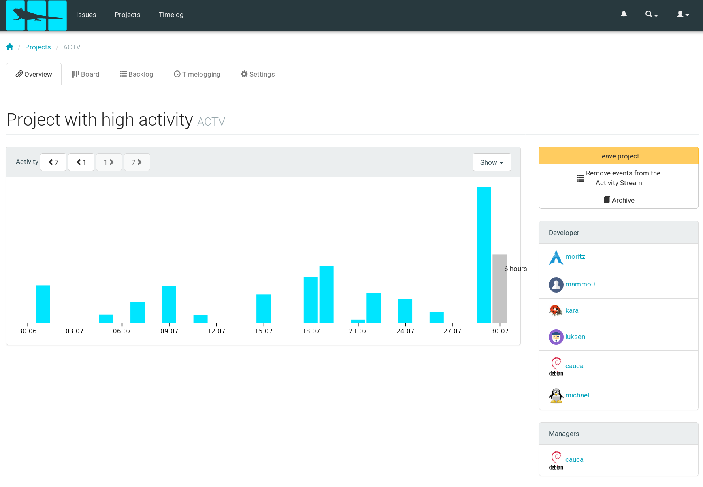

Activity overviews
It is useful to have multiple ways to determine the activity for a project. Therefore it is possible to show the amount of time you
spent and also the amount of
actions. Please don't get confused by the second one, because all of the actions are logged for the 07-30, but that's the date I created all of those demonstration projects. I logged some time for previous period, but didn't manipulate the database by myself to spread those actions similarly.
